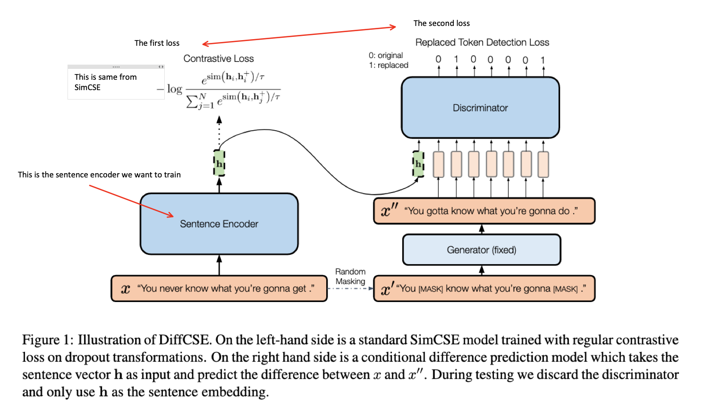
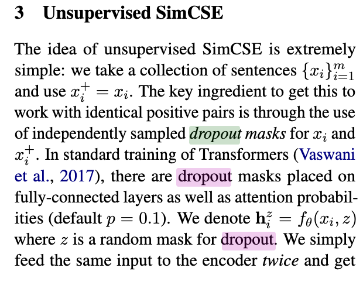
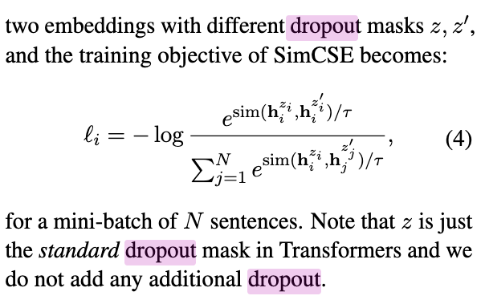

[TOC]
- Title: DiffCSE: Difference Based Contrastive Learning for Sentence Embeddings
- Author: Yung-Sung Chuang et. al.
- Publish Year: 21 Apr 2022
- Review Date: Sat, Aug 27, 2022
Summary of paper
Motivation
- DiffCSE learns sentences that are sensitive to the difference between the original sentence and and edited sentence.
Contribution
- we propose DiffCSE, an unsupervised contrastive learning framework for learning sentence embeddings
Some key terms
DiffCSE
- this is an unsupervsied contrastive learning framework rather than model architecture
Contrastive learning in single modality data
- use multiple augmentations on a single datum to construct positive pairs whose representations are trained to be more similar to one another than negative pairs
- e.g., random cropping, color jitter, rotation for vision models
- dropout for NLP
- Contrastive learning encourages representations to be insensitive to these transformations
- i.e. the encoder is trained to be invariant to a set of manually chosen transformations
Limitation of existing contrastive learning data augmentation for language data
- Gao et. al. find that constructing positive pairs via a simple dropout-based augmentation works much better than more complex augmentations such as word deletions or replacements based on synonyms or masked language models.
Hindsight behind direct augmentation in language
- while the training objective in contrastive learning encourages representations to be invariant to augmentation transformations, direct augmentations on the input (e.g., deletion, replacement) often change the meaning of the sentence.
Methodology
we propose to learn sentence representations that are aware of, but not necessarily invariant to, such direct surface-level augmentations
- we operationalise equivariant contrastive learning on sentences by using dropout-based augmentation as the insensitive transformation
- and MLM-based word replacement as the sensitive transformation

SimCSE


Meaning of $x_i^+ = x_i$
this means that the sentence that is going to augmented is the original sentence.
They output $h_i^+$ just by using the random dropout layer.
Potential future work
-
we may directly use the sentence embedding from this model
-
github page: https://github.com/voidism/DiffCSE
|
|
-
However, this sentence embedding is not caring about the binary classification
-
So if we want to know the binary classification Transformer stuffs, please read: Retrieve Fast, Rerank Smart: Cooperative and Joint Approaches for Improved Cross-Modal Retrieval